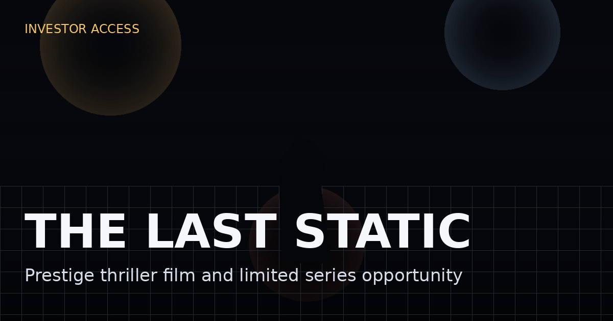

Music mythology audience
Viewers who know Nirvana, know the iconography, know the widow-and-legend folklore, and want something smarter than a rehashed documentary.
 Get deck
Get deck
Streamer-ready limited series package
A premium 6-part limited series inspired by Kurt Cobain, Nirvana, Seattle 1994, the widow, the investigator, the note, the money, and the official story that closed too fast.
This is not a vague grunge mood board. It is a sharp, castable thriller built from the real pressure points people still talk about 30 years later: the Rome overdose, the rehab escape, the locked house, the missing days, the note, the private investigator, the inheritance, the handlers, the label, and the cultural machine that kept turning confusion into certainty.

When the death of a world-defining rock star is ruled shut, a private investigator collides with the widow, the inner circle, the label, and the city that built the myth — and discovers the real crime may be the story that survived.
Why this story still has teeth
The project sits exactly where prestige buyers like heat: at the intersection of music mythology, true-crime appetite, institutional distrust, and public-memory contamination. Everybody knows the icon. Everybody knows the ending. Almost nobody agrees on what the ending means. That is not a trivia problem. That is your series engine.
Storyline
Seattle, 1994. The biggest anti-star in the world is collapsing under heroin, fame, stomach pain, marital warfare, press obsession, and the impossible burden of being the voice of a generation he no longer trusts. The band is a global machine. The marriage is a headline war. The money is enormous. The people around him are exhausted, dependent, terrified, and incentivized in different directions.
Then comes the run of events that made the case immortal: the Rome overdose, the staged calm after the chaos, the rehab intervention, the sudden disappearance, the police welfare theater, the locked greenhouse room, the note everyone has read but nobody reads the same way, the private investigator who thinks the official version is too convenient, and the widow who may be grieving, managing, manipulating, or all three at once.
The series does not flatten that into "did she do it?" noise. It weaponizes the ambiguity. Every episode peels back one layer of what it took for the official story to stabilize, and every layer reveals a different economy feeding on Kurt's collapse: emotional, chemical, financial, legal, and cultural.
By the end, the viewer is no longer trapped in a simple murder-versus-suicide binary. They are staring at the darker possibility that a whole ecosystem needed Kurt to remain broken, needed the case to close, and needed the myth to become more useful than the man.
Why this is bigger than a Cobain fan project
Viewers who know Nirvana, know the iconography, know the widow-and-legend folklore, and want something smarter than a rehashed documentary.
People who show up for contaminated truth, private obsession, public myth, and the dread of institutions or inner circles closing ranks.
The crowd that will consume the series, then devour an aftershow, companion investigation, soundtrack commentary, and a "what was real?" extension.
Episode structure
The overdose that can be read as accident, cry for help, or early rehearsal. The marriage, the public image, and the band machine all crack in view.
Friends, handlers, and family try to force order. Rehab becomes theater. The city starts telling itself a story of rescue while everyone knows control is slipping.
Kurt vanishes. Searches fail. Calls multiply. The private investigator enters. Every person who should be calm is suddenly managing optics.
The body is found. The note becomes scripture. The room becomes a shrine. The official story arrives with suspicious speed.
Grief, money, inheritance, conflicting testimony, changing memories, and the possibility that protection and manipulation have become inseparable.
The PI chases the seams. The culture chooses the most portable version. The audience is left with the cost of a myth that became easier to live with than the mess.
Core roles buyers can cast in their head
Brilliant, sick, suspicious, funny, self-lacerating, and already halfway mythologized while still alive. A man too aware to survive being turned into a symbol.
Magnetic, wounded, manipulative, possibly truthful, possibly strategic, absolutely impossible to simplify. The role everybody will want to debate after every episode.
Half bulldog, half opportunist, maybe the only person really chasing the seams, maybe just another man in love with his own theory. The audience rides his obsession.
Bandmates, assistants, nannies, lawyers, dealers, cops, label people, family, fixers, and scene veterans. Each one carries one missing tile of the mosaic.
The dramatic thesis
The anti-fame rock god trapped inside the largest youth brand on earth.
Not as background wallpaper, but as leverage, self-medication, and chaos generator.
Estate stakes, contracts, catalog value, control, and the economics of a dead legend.
Who gets to define the last week, the note, the marriage, the body, and the memory.
Why this packages cleanly
Participation paths
Co-develop the pilot, series bible, deck, packaging list, and attachment strategy.
Bring relationships, talent access, buyer reach, and package credibility.
Participate in the underlying project structure, creator involvement, and upside negotiation.
Exploit companion podcast, video-podcast, soundtrack, and investigation-adjacent media.
Private deck, package brief, investor FAQ, phone pitch sheet, and next-step conversation.
Bottom line
This is not another documentary recap. This is the premium limited series version — the one that uses the real Kurt Cobain / Nirvana mythology as ignition, then delivers a tense story about the widow, the investigator, the circle, the estate, and the machinery that made one death impossible to finish arguing about.